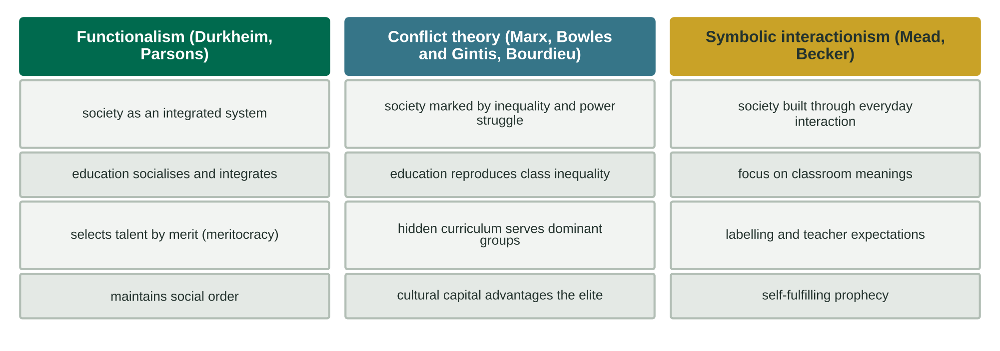
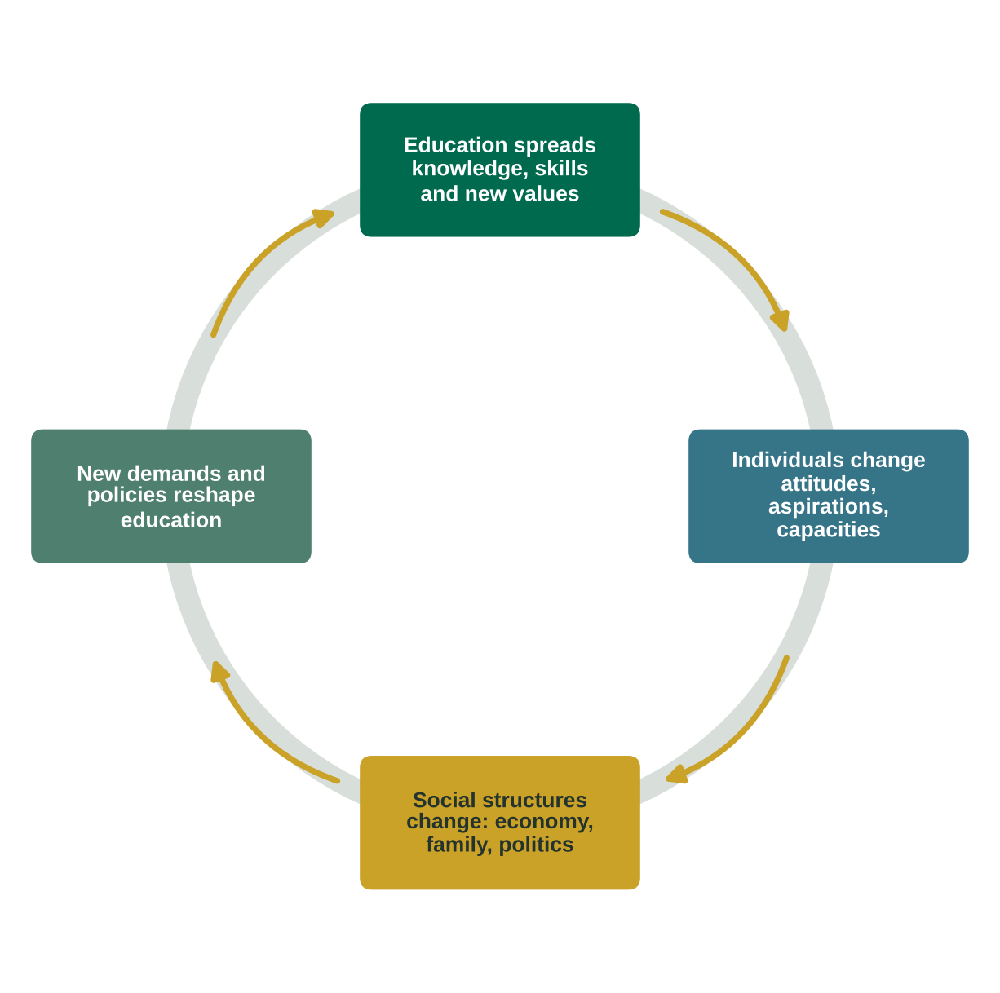

PC 116 শিক্ষার সমাজতাত্ত্বিক ভিত্তি
সমাজ, সামাজিক প্রতিষ্ঠান, শিক্ষার সামাজিক ভিত্তি ও কার্যাবলি এবং বাংলাদেশের সামাজিক সমস্যা
এটি ইংরেজি পাঠ নোটের বাংলা সংস্করণ। পাঠতালিকা ও তথ্যসূত্রের বইয়ের নাম মূল ভাষায় রাখা হয়েছে, যাতে লাইব্রেরিতে সহজে খুঁজে পান।
সূচিপত্র
- ইউনিট ১: শিক্ষা অধ্যয়নে সমাজতাত্ত্বিক উপাগম
- ইউনিট ২: শিক্ষার সামাজিক লক্ষ্য
- ইউনিট ৩: শিক্ষার সামাজিক বাহন
- ইউনিট ৪: শিক্ষার সামাজিক ভিত্তি (বাংলাদেশের প্রেক্ষাপটে)
- ইউনিট ৫: শিক্ষার সামাজিক কার্যাবলি
- ইউনিট ৬: শিক্ষণবিজ্ঞান ও বয়স্ক শিক্ষণবিজ্ঞানের সমাজবিজ্ঞান
- ইউনিট ৭: বাংলাদেশের সামাজিক সমস্যা ও শিক্ষা
- পাঠতালিকা
- পরীক্ষা প্রস্তুতি প্রশ্নব্যাংক
- তথ্যসূত্র
এই কোর্স সম্পর্কে
শিক্ষা একটি সামাজিক প্রক্রিয়া, যা সমাজের মধ্যে সংঘটিত হয় এবং সমাজ দ্বারাই গঠিত হয়। এই কোর্সে সমাজতাত্ত্বিক ধারণা ও তত্ত্ব (ক্রিয়াবাদ, দ্বন্দ্ব তত্ত্ব, প্রতীকী মিথস্ক্রিয়াবাদ এবং জৈব ও অজৈব উপাগম) ব্যবহার করে বিশ্লেষণ করা হয়েছে শিক্ষার সামাজিক লক্ষ্য, যেসব বাহনের মাধ্যমে শিক্ষা সংঘটিত হয়, যেসব সামাজিক ভিত্তি (পরিবার, জেন্ডার, নৃগোষ্ঠী, স্তরবিন্যাস, ধর্ম, সংস্কৃতি, নগরায়ণ, অর্থনীতি ও রাজনীতি) শিক্ষায় প্রবেশাধিকার ও ফলাফলকে প্রভাবিত করে, এবং সামাজিকীকরণ, নাগরিকতা ও সামাজিক পরিবর্তনের মতো শিক্ষার সামাজিক কার্যাবলি। কোর্সটি শেষ হয়েছে পেশা হিসেবে শিক্ষকতার সমাজতত্ত্ব এবং বাংলাদেশে শিক্ষাকে প্রভাবিত করে এমন সামাজিক সমস্যাগুলো দিয়ে।
কোর্সের উদ্দেশ্য
সমাজবিজ্ঞানের ধারণা, প্রকৃতি ও পরিধি এবং শিক্ষার প্রতি সমাজতাত্ত্বিক উপাগম ব্যাখ্যা করা।
শিক্ষার সামাজিক লক্ষ্য, বাহন, ভিত্তি ও কার্যাবলি বিশ্লেষণ করা।
শিক্ষণবিজ্ঞান ও বয়স্ক শিক্ষণবিজ্ঞানের সামাজিক প্রেক্ষাপট এবং শিক্ষকের সামাজিক ভূমিকা ও নৈতিকতা ব্যাখ্যা করা।
বাংলাদেশের প্রধান সামাজিক সমস্যাগুলো এবং সেগুলো মোকাবিলায় শিক্ষার ভূমিকা বিশ্লেষণ করা।
প্রতিটি ইউনিট অফিশিয়াল পাঠ্যসূচির ক্রম অনুসরণ করে। প্রথমে মূল আলোচনা পড়ুন, তারপর মূল কথা বক্সগুলো, এরপর পরীক্ষার প্রস্তুতি প্রশ্ন দিয়ে নিজেকে যাচাই করুন।
সোনালি বক্স = অবশ্যই মনে রাখার বিষয়। সবুজাভ নীল বক্স = সংজ্ঞা ও পড়ার কৌশল। সবুজ বক্স = বাংলাদেশ প্রেক্ষাপট।
শেষ অধ্যায়টি বিশ্ববিদ্যালয় পরীক্ষার ধরনে একটি প্রশ্নব্যাংক (উত্তরসহ MCQ, সংক্ষিপ্ত ও রচনামূলক প্রশ্ন), এরপর APA 7th রীতিতে পূর্ণ তথ্যসূত্র।
ভর্তি, বাজেট ও নীতি সংক্রান্ত পরিসংখ্যান প্রতি বছর বদলায়। পরীক্ষার আগে BANBEIS, DPE, UGC ও UNESCO-এর সর্বশেষ তথ্য দেখে নিন।
ইউনিট ১: শিক্ষা অধ্যয়নে সমাজতাত্ত্বিক উপাগম
অধ্যায়ের সারসংক্ষেপ
সমাজবিজ্ঞান (লাতিন socius, অর্থাৎ সঙ্গী, এবং গ্রিক logos, অর্থাৎ অধ্যয়ন) নামটি দেন অগুস্ত কোঁত (১৮৩৮), যাঁকে সমাজবিজ্ঞানের জনক বলা হয়। এটি হলো "মানুষের সামাজিক জীবন, দল ও সমাজের বৈজ্ঞানিক অধ্যয়ন" (Giddens & Sutton, 2021)।
এই অধ্যায়ে যা আছে: সমাজবিজ্ঞানের ধারণা, প্রকৃতি ও পরিধি; শিক্ষা সমাজবিজ্ঞান ও শিক্ষামূলক সমাজবিজ্ঞান; প্রধান তাত্ত্বিক দৃষ্টিভঙ্গি; অজৈব ও জৈব উপাগম।
মনে রাখার মূল বিষয়:
- "জৈব উপাগম" (জীবদেহরূপে সমাজ, স্পেন্সার) এবং ডুর্খেইমের "জৈব সংহতি" (শ্রমের জটিল বিভাজনসম্পন্ন আধুনিক সমাজে পারস্পরিক নির্ভরশীলতা) গুলিয়ে ফেলবেন না।
শিক্ষাক্রমে যা বলা হয়েছেইউনিট ১: শিক্ষা অধ্যয়নে সমাজতাত্ত্বিক উপাগম · ৫ কন্টাক্ট আওয়ার
এই ইউনিট শেষে শিক্ষার্থীরা যা পারবে
- ‘সমাজবিজ্ঞান’-এর ধারণা, প্রকৃতি ও পরিধি বর্ণনা করতে
- শিক্ষা অধ্যয়নে সমাজতাত্ত্বিক উপাগমের গুরুত্ব ব্যাখ্যা করতে
- সামাজিক কাঠামোর অজৈব ও জৈব মডেল প্রয়োগ করে বিভিন্ন দেশের শিক্ষাব্যবস্থা বিশ্লেষণ করতে
- সমাজবিজ্ঞানের ধারণা, প্রকৃতি ও পরিধি
- ‘শিক্ষা’ অধ্যয়নে সমাজতাত্ত্বিক উপাগমের অর্থ ও গুরুত্ব
- প্রধান উপাগমসমূহ: অজৈব উপাগম ও জৈব উপাগম
১.১ সমাজবিজ্ঞানের ধারণা, প্রকৃতি ও পরিধি
সমাজবিজ্ঞান (Sociology) (লাতিন socius, অর্থাৎ সঙ্গী, এবং গ্রিক logos, অর্থাৎ অধ্যয়ন) নামটি দেন অগুস্ত কোঁত (Auguste Comte, ১৮৩৮), যাঁকে সমাজবিজ্ঞানের জনক বলা হয়। এটি হলো "মানুষের সামাজিক জীবন, দল ও সমাজের বৈজ্ঞানিক অধ্যয়ন" (Giddens & Sutton, 2021)। মাক্স ভেবার (Max Weber) একে সংজ্ঞায়িত করেছেন এভাবে: "এমন একটি বিজ্ঞান যা সামাজিক ক্রিয়ার গতিপথ ও প্রভাবের কার্যকারণ ব্যাখ্যায় পৌঁছানোর জন্য সামাজিক ক্রিয়ার ব্যাখ্যামূলক অনুধাবনের চেষ্টা করে।"
প্রকৃতি: সমাজবিজ্ঞান একটি সামাজিক বিজ্ঞান (প্রাকৃতিক বিজ্ঞান নয়); এটি নিরূপণমূলক (কী হওয়া উচিত নয়, কী আছে তা বর্ণনা করে), বিশুদ্ধ ও ফলিত উভয়ই, বিমূর্ত (একক ঘটনা নয়, ধরন বা প্যাটার্ন অধ্যয়ন করে), সাধারণীকরণমূলক, এবং একই সঙ্গে যৌক্তিক ও অভিজ্ঞতাভিত্তিক।
পরিধি: এ বিষয়ে দুটি চিন্তাধারা রয়েছে:
আকারগত (বিশেষায়িত) মতবাদ (Formal school) (জিমেল, টনিস, ভেবার; Simmel, Tönnies, Weber): সমাজবিজ্ঞান সামাজিক সম্পর্কের রূপ, যেমন সহযোগিতা, প্রতিযোগিতা ও দ্বন্দ্ব, অধ্যয়ন করে।
সমন্বয়ী মতবাদ (Synthetic school) (ডুর্খেইম, হবহাউস, সরোকিন; Durkheim, Hobhouse, Sorokin): সমাজবিজ্ঞান একটি সাধারণ বিজ্ঞান, যা সমগ্র সমাজকে অধ্যয়নের জন্য সব সামাজিক বিজ্ঞানের সমন্বয় ঘটায়।
সমাজতাত্ত্বিক কল্পনাশক্তি (Sociological imagination) (সি. রাইট মিলস, C. Wright Mills, ১৯৫৯): "ব্যক্তিগত সমস্যা"কে (একটি শিশুর ঝরে পড়া) "জনপরিসরের ইস্যু"র (দারিদ্র্য, শিশুশ্রম, নীতি) সঙ্গে যুক্ত করার সামর্থ্য।
১.২ শিক্ষা সমাজবিজ্ঞান ও শিক্ষামূলক সমাজবিজ্ঞান
শিক্ষামূলক সমাজবিজ্ঞান (Educational sociology) (বিংশ শতাব্দীর গোড়ার দিকে; লেস্টার ওয়ার্ড, Lester Ward, ও জর্জ পেইন, George Payne) শিক্ষাগত সমস্যা সমাধানে সমাজবিজ্ঞানকে প্রয়োগ করত; এটি ছিল ব্যবহারিক ও সংস্কারমুখী।
শিক্ষা সমাজবিজ্ঞান (Sociology of education) (১৯৫০-এর দশক থেকে) হলো একটি সামাজিক প্রতিষ্ঠান হিসেবে শিক্ষা এবং অন্যান্য প্রতিষ্ঠান, কাঠামো ও প্রক্রিয়ার সঙ্গে এর সম্পর্কের বৈজ্ঞানিক অধ্যয়ন। এটি প্রশ্ন করে: শিক্ষা কীভাবে বৈষম্যের পুনরুৎপাদন করে বা তা হ্রাস করে? বিদ্যালয়-শিক্ষা সমাজের জন্য কী করে? শ্রেণিকক্ষে জ্ঞান ও পরিচয় কীভাবে নির্মিত হয়?
সমাজতাত্ত্বিক উপাগমের গুরুত্ব: এটি শিক্ষাগত সাফল্য ও ব্যর্থতার সামাজিক কারণ উন্মোচন করে; অপ্রকাশ্য শিক্ষাক্রম (hidden curriculum) ব্যাখ্যা করে; ন্যায্যতা-বিষয়ক নীতিকে তথ্য দিয়ে সমৃদ্ধ করে; বৈচিত্র্যময় শিক্ষার্থীদের বুঝতে শিক্ষকদের সাহায্য করে; এবং বিদ্যালয়কে বৃহত্তর সমাজের সঙ্গে যুক্ত করে।
১.৩ প্রধান তাত্ত্বিক দৃষ্টিভঙ্গি

চিত্র ১. শিক্ষা সম্পর্কে তিনটি ধ্রুপদি সমাজতাত্ত্বিক দৃষ্টিভঙ্গি
ক্রিয়াবাদ (Functionalism)। এমিল ডুর্খেইম (Émile Durkheim, 1956) শিক্ষাকে দেখেছেন "তরুণ প্রজন্মের পদ্ধতিগত সামাজিকীকরণ" হিসেবে, যা সমাজের প্রয়োজনীয় সামাজিক সংহতি সৃষ্টি করে। ট্যালকট পারসনস (Talcott Parsons, 1959) বিদ্যালয়ের শ্রেণিকে দেখেছেন এমন প্রধান বাহন হিসেবে, যা শিশুদের পরিবারের বিশিষ্টতাবাদী মূল্যবোধ থেকে সমাজের সর্বজনীন, অর্জনভিত্তিক মূল্যবোধে স্থানান্তরিত করে এবং তাদের প্রাপ্তবয়স্ক ভূমিকায় বণ্টন করে। ডেভিস ও মুর (Davis and Moore, 1945) যুক্তি দেন যে শিক্ষা মানুষকে মেধা অনুযায়ী অসমভাবে পুরস্কৃত বিভিন্ন পদে বাছাই করে।
দ্বন্দ্ব তত্ত্ব (Conflict theory)। বোলস ও জিন্টিস (Bowles and Gintis, 1976), Schooling in Capitalist America: সাদৃশ্য নীতি (correspondence principle), যার মতে বিদ্যালয়ের সামাজিক সম্পর্ক (স্তরক্রম, আনুগত্য, বাহ্যিক পুরস্কার) পুঁজিবাদী কর্মক্ষেত্রের সামাজিক সম্পর্কের অনুরূপ। বুর্দিউ ও পাসেরোঁ (Bourdieu and Passeron, 1977): বিদ্যালয় সাংস্কৃতিক পুঁজিকে (cultural capital; প্রভাবশালী শ্রেণির ভাষা, রুচি ও প্রবণতা) পুরস্কৃত করে, ফলে সাংস্কৃতিক পুনরুৎপাদন (cultural reproduction) ও প্রতীকী সহিংসতা ঘটে। কলিন্স (Collins, 1979): সনদবাদ (credentialism)।
প্রতীকী মিথস্ক্রিয়াবাদ (Symbolic interactionism)। শিক্ষকেরা কীভাবে "আদর্শ ছাত্র" বিচার করেন সে সম্পর্কে বেকারের (Becker, 1952) গবেষণা; তকমা তত্ত্ব (labelling theory); রোজেনথাল ও জ্যাকবসনের (Rosenthal and Jacobson, 1968) Pygmalion in the Classroom দেখিয়েছে যে শিক্ষকের প্রত্যাশা স্বতঃপূরণমূলক ভবিষ্যদ্বাণী (self-fulfilling prophecy) সৃষ্টি করতে পারে।
১.৪ অজৈব ও জৈব উপাগম
সমাজ এবং শিক্ষাসহ এর বিভিন্ন অংশের সম্পর্ক বোঝার এ দুটি বিস্তৃত উপায়।
| ভিত্তি | অজৈব (যান্ত্রিক / পরমাণুবাদী) উপাগম | জৈব উপাগম |
|---|---|---|
| সমাজ সম্পর্কে দৃষ্টিভঙ্গি | ব্যক্তির একটি সমষ্টি, যন্ত্রের যন্ত্রাংশের মতো, যা চুক্তির মাধ্যমে একত্র হয়েছে | একটি জীবন্ত দেহ, যার অংশগুলো (প্রতিষ্ঠান) দেহের অঙ্গপ্রত্যঙ্গের মতো পরস্পরনির্ভরশীল |
| প্রধান চিন্তাবিদ | হবস, লক, রুসো (Hobbes, Locke, Rousseau) (সামাজিক চুক্তি); ব্যক্তিস্বাতন্ত্র্যবাদ | হার্বার্ট স্পেন্সার (Herbert Spencer) (জৈব সাদৃশ্য), ডুর্খেইম, প্লেটো (Plato) (রাষ্ট্র হলো ব্যক্তির "বৃহৎ রূপ") |
| প্রাধান্য | ব্যক্তিই প্রথম; সমাজ ব্যক্তির স্বার্থ রক্ষা করে | সমাজই প্রথম; ব্যক্তি তার সামাজিক ভূমিকার মধ্যে অর্থ খুঁজে পায় |
| শিক্ষা | ব্যক্তির বিকাশ, অধিকার ও স্বাধীনতার ওপর গুরুত্ব দেয় | সামাজিকীকরণ, সামাজিক দক্ষতা, কর্তব্য ও সংহতির ওপর গুরুত্ব দেয় |
| ডুর্খেইমের পরিভাষায় | বিশেষায়িত ব্যক্তিদের জটিল সমাজে "জৈব সংহতি"-র নিকটবর্তী | (লক্ষ করুন: ডুর্খেইমের যান্ত্রিক সংহতি (mechanical solidarity) সরল সমাজে সাদৃশ্যের ওপর ভিত্তি করে; জৈব সংহতি (organic solidarity) জটিল সমাজে পারস্পরিক নির্ভরশীলতার ওপর ভিত্তি করে) |
"জৈব উপাগম" (জীবদেহরূপে সমাজ, স্পেন্সার) এবং ডুর্খেইমের "জৈব সংহতি" (শ্রমের জটিল বিভাজনসম্পন্ন আধুনিক সমাজে পারস্পরিক নির্ভরশীলতা) গুলিয়ে ফেলবেন না। পরীক্ষকেরা কখনো কখনো ঠিক এই পার্থক্যটিই যাচাই করেন।
সম্ভাব্য প্রশ্ন: "শিক্ষার প্রতি সমাজতাত্ত্বিক উপাগম কী? এর গুরুত্ব ব্যাখ্যা করুন।" "শিক্ষা সম্পর্কে ক্রিয়াবাদী ও দ্বন্দ্ববাদী দৃষ্টিভঙ্গির তুলনা করুন।" "জৈব ও অজৈব উপাগমের মধ্যে পার্থক্য নির্দেশ করুন।"
ইউনিট ২: শিক্ষার সামাজিক লক্ষ্য
অধ্যায়ের সারসংক্ষেপ
শিক্ষা যখন ব্যক্তিকে সমাজে উৎপাদনশীল ও সম্প্রীতিপূর্ণভাবে বসবাসের জন্য প্রস্তুত করে, তখন তা সামাজিক লক্ষ্য পূরণ করে। পাঠ্যসূচিতে নয়টি লক্ষ্য তালিকাভুক্ত রয়েছে; সামগ্রিক দৃষ্টিভঙ্গি এগুলোকে পরস্পর-সম্পর্কিত হিসেবে দেখে।
শিক্ষাক্রমে যা বলা হয়েছেইউনিট ২: শিক্ষার সামাজিক লক্ষ্য · ৪ কন্টাক্ট আওয়ার
এই ইউনিট শেষে শিক্ষার্থীরা যা পারবে
- শিক্ষার সামাজিক লক্ষ্যের গুরুত্ব চিহ্নিত করতে
- সামাজিক জীবনে শিক্ষার এই লক্ষ্যগুলোর গুরুত্ব ব্যাখ্যা করতে
- শারীরিক বিকাশ
- ব্যক্তিত্বের বিকাশ
- গণতান্ত্রিক ও বুদ্ধিবৃত্তিক সামর্থ্যের বিকাশ
- সামাজিক দক্ষতার বিকাশ
- জীবিকা
- নৈতিক বিকাশ
- সাংস্কৃতিক বিকাশ
- নান্দনিক বিকাশ
- আধ্যাত্মিক বিকাশ
শিক্ষা যখন ব্যক্তিকে সমাজে উৎপাদনশীল ও সম্প্রীতিপূর্ণভাবে বসবাসের জন্য প্রস্তুত করে, তখন তা সামাজিক লক্ষ্য পূরণ করে। পাঠ্যসূচিতে নয়টি লক্ষ্য তালিকাভুক্ত রয়েছে; সামগ্রিক দৃষ্টিভঙ্গি এগুলোকে পরস্পর-সম্পর্কিত হিসেবে দেখে।

চিত্র ২. শিক্ষার সামাজিক লক্ষ্যসমূহ
| লক্ষ্য | অর্থ | শিক্ষা কীভাবে তা অর্জন করে | বাংলাদেশের উদাহরণ |
|---|---|---|---|
| শারীরিক বিকাশ | স্বাস্থ্য, শারীরিক সক্ষমতা, পেশিজ দক্ষতা, স্বাস্থ্যকর অভ্যাস | শারীরিক শিক্ষা, খেলাধুলা, স্বাস্থ্যশিক্ষা, বিদ্যালয়ে খাবার | বাধ্যতামূলক শারীরিক শিক্ষা ও স্বাস্থ্য বিষয়; আন্তঃবিদ্যালয় ক্রীড়া প্রতিযোগিতা |
| ব্যক্তিত্বের বিকাশ | জ্ঞানীয়, আবেগীয়, সামাজিক ও নৈতিক বৈশিষ্ট্যের সমন্বিত বিকাশ | শিশুকেন্দ্রিক শিক্ষাদান, সহশিক্ষাক্রমিক কার্যক্রম, কাউন্সেলিং | বিতর্ক ক্লাব, স্কাউট, সাংস্কৃতিক অনুষ্ঠান |
| গণতান্ত্রিক ও বুদ্ধিবৃত্তিক সামর্থ্য | সমালোচনামূলক চিন্তন, যৌক্তিক আলোচনা, সহনশীলতা, অংশগ্রহণ | আলোচনা পদ্ধতি, শিক্ষার্থী পরিষদ, পৌরনীতি | মাধ্যমিক বিদ্যালয়ে স্টুডেন্টস কেবিনেট নির্বাচন |
| সামাজিক দক্ষতা | সহযোগিতা, যোগাযোগ, সহমর্মিতা, নেতৃত্ব | দলগত কাজ, সমাজসেবা, সামাজিক ও আবেগীয় শিখন (SEL) | NCTB শিক্ষাক্রমে দলগত প্রকল্প |
| জীবিকা | জীবিকা অর্জনের জ্ঞান ও দক্ষতা | কারিগরি ও বৃত্তিমূলক শিক্ষা ও প্রশিক্ষণ (TVET), পেশাগত নির্দেশনা, উদ্যোক্তা উন্নয়ন | SSC (ভোকেশনাল), দক্ষতা উন্নয়ন কর্মসূচি |
| নৈতিক বিকাশ | সততা, ন্যায়পরায়ণতা, দায়িত্ববোধ | নৈতিক ও ধর্মীয় শিক্ষা, আদর্শ ব্যক্তিত্ব (role model) | ধর্ম ও নৈতিক শিক্ষা বিষয় |
| সাংস্কৃতিক বিকাশ | ঐতিহ্য অনুধাবন ও সঞ্চালন; বৈচিত্র্যময় সংস্কৃতির প্রতি শ্রদ্ধা | সাহিত্য, ইতিহাস, উৎসব, শিল্পকলা | পহেলা বৈশাখ ও ভাষা দিবস উদ্যাপন |
| নান্দনিক বিকাশ | সৌন্দর্যের উপলব্ধি ও সৃষ্টি | সংগীত, চিত্রকলা, কারুশিল্প, সাহিত্য | প্রাথমিক শিক্ষাক্রমে চারু ও কারুকলা, সংগীত |
| আধ্যাত্মিক বিকাশ | অন্তর্নিহিত মূল্যবোধ, জীবনের অর্থ, আত্মসত্তার ঊর্ধ্বে সংযোগ | ধর্মীয় শিক্ষা, আত্মপ্রতিফলন, মূল্যবোধ শিক্ষা | সব প্রধান ধর্মের জন্য ধর্মীয় শিক্ষা |
একটি ভারসাম্যপূর্ণ উত্তরে ব্যাখ্যা করা হয় যে এই লক্ষ্যগুলোকে সমন্বিত করতে হবে। জীবিকার ওপর অতিরিক্ত গুরুত্ব সংকীর্ণ উপযোগবাদের ঝুঁকি তৈরি করে; আবার জীবিকাকে বাদ দিয়ে আধ্যাত্মিক বা সাংস্কৃতিক লক্ষ্যের ওপর অতিরিক্ত গুরুত্ব শিক্ষাকে অপ্রাসঙ্গিক করে তোলার ঝুঁকি তৈরি করে। জন ডিউইর (John Dewey) "সামাজিক দক্ষতা" (social efficiency) ধারণা ব্যক্তির বিকাশকে সমাজে অবদানের সঙ্গে সমন্বিত করে।
ইউনিট ৩: শিক্ষার সামাজিক বাহন
অধ্যায়ের সারসংক্ষেপ
শিক্ষার বাহন হলো সমাজের সেইসব প্রতিষ্ঠান ও শক্তি, যা ইচ্ছাকৃতভাবে বা প্রাসঙ্গিকভাবে ব্যক্তিকে শিক্ষিত করে। এগুলোকে আনুষ্ঠানিক (ইচ্ছাকৃত, সংগঠিত) এবং অনানুষ্ঠানিক (স্বতঃস্ফূর্ত, প্রাসঙ্গিক) হিসেবে শ্রেণিবিভক্ত করা হয়।
এই অধ্যায়ে যা আছে: ধারণা; আনুষ্ঠানিক বাহন; অনানুষ্ঠানিক বাহন; বাহনসমূহের পারস্পরিক সম্পর্ক।
শিক্ষাক্রমে যা বলা হয়েছেইউনিট ৩: শিক্ষার সামাজিক বাহন · ৪ কন্টাক্ট আওয়ার
এই ইউনিট শেষে শিক্ষার্থীরা যা পারবে
- সমাজে শিক্ষা বিস্তারকারী প্রধান সামাজিক বাহনগুলো চিহ্নিত ও শ্রেণিবিভক্ত করতে
- শিক্ষায় এই বাহনগুলোর ভূমিকা ব্যাখ্যা করতে
- আনুষ্ঠানিক বাহন: বিদ্যালয়, মাদ্রাসা, কলেজ, বিশ্ববিদ্যালয়, অন্যান্য শিক্ষাপ্রতিষ্ঠান
- অনানুষ্ঠানিক বাহন: গৃহ বা পরিবার, সম্প্রদায়, রাষ্ট্র, সংগঠন, ধর্ম, সমবয়সী দল, গণমাধ্যম, সামাজিক যোগাযোগমাধ্যম, ইন্টারনেট, গ্রন্থাগার, জাদুঘর, চলচ্চিত্র, নাটক, সংবাদপত্র, সাময়িকী, রেডিও, টেলিভিশন, ভ্রমণ
৩.১ ধারণা
শিক্ষার বাহন (Agencies of education) হলো সমাজের সেইসব প্রতিষ্ঠান ও শক্তি, যা ইচ্ছাকৃতভাবে বা প্রাসঙ্গিকভাবে ব্যক্তিকে শিক্ষিত করে। এগুলোকে আনুষ্ঠানিক (formal; ইচ্ছাকৃত, সংগঠিত) এবং অনানুষ্ঠানিক (informal; স্বতঃস্ফূর্ত, প্রাসঙ্গিক) হিসেবে শ্রেণিবিভক্ত করা হয়। কোনো কোনো লেখক এর সঙ্গে উপানুষ্ঠানিক (non-formal) বাহন (সাক্ষরতা কেন্দ্র, প্রশিক্ষণ কর্মসূচি) যোগ করেন, এবং সক্রিয় (active; দ্বিমুখী: পরিবার, সম্প্রদায়) ও নিষ্ক্রিয় (passive; একমুখী: সংবাদপত্র, রেডিও) বাহনেরও উল্লেখ করেন।

চিত্র ৩. শিক্ষার বাহনসমূহ
৩.২ আনুষ্ঠানিক বাহন
বিদ্যালয়: প্রধান আনুষ্ঠানিক বাহন। কার্যাবলি: নিয়মতান্ত্রিক শিক্ষণ, সামাজিকীকরণ, চরিত্র গঠন, সংস্কৃতির সঞ্চালন, নাগরিকতা ও কর্মজীবনের প্রস্তুতি, বাছাই ও সনদ প্রদান। ডিউই: "বিদ্যালয় একটি বিশেষ পরিবেশ", যা পরিবেশকে সরল করে, পরিশুদ্ধ করে এবং ভারসাম্যপূর্ণ করে।
মাদ্রাসা: ধর্মীয় ও সাধারণ শিক্ষার সমন্বয়কারী আনুষ্ঠানিক বাহন, যা বাংলাদেশের বহু গ্রামীণ পরিবারের কাছে কেন্দ্রীয় গুরুত্ব বহন করে।
কলেজ ও বিশ্ববিদ্যালয়: উচ্চতর জ্ঞান, গবেষণা, পেশাগত প্রস্তুতি ও নেতৃত্ব; বিশ্ববিদ্যালয় সমালোচনামূলক চিন্তা ও সামাজিক আন্দোলনের কেন্দ্র হিসেবেও কাজ করে (১৯৫২ সালের ভাষা আন্দোলন ও ১৯৬৯ সালের গণঅভ্যুত্থানে নেতৃত্ব দিয়েছিল শিক্ষার্থীরা)।
অন্যান্য প্রতিষ্ঠান: কারিগরি প্রতিষ্ঠান, শিক্ষক প্রশিক্ষণ প্রতিষ্ঠান, একাডেমি ও প্রশিক্ষণ কেন্দ্র।
৩.৩ অনানুষ্ঠানিক বাহন
| সংস্থা | শিক্ষাগত ভূমিকা |
|---|---|
| গৃহ / পরিবার | প্রথম বিদ্যালয় এবং মা প্রথম শিক্ষক; প্রাথমিক সামাজিকীকরণ, ভাষা, মূল্যবোধ, অভ্যাস, আবেগীয় নিরাপত্তা, শিখনের প্রতি দৃষ্টিভঙ্গি |
| সম্প্রদায় | রীতিনীতি, প্রথা, উৎসব, পেশাগত দক্ষতা, সামাজিক নিয়ন্ত্রণ; বিদ্যালয়ের প্রতি সম্প্রদায়ের সহায়তা (বিদ্যালয় ব্যবস্থাপনা কমিটি, SMC) |
| রাষ্ট্র | নীতি, আইন, অর্থায়ন, শিক্ষাক্রম, বাধ্যতামূলক শিক্ষা, নিয়ন্ত্রণ, পৌরশিক্ষা |
| সংগঠন (ক্লাব, NGO, স্কাউট) | নেতৃত্ব, সেবা, বিশেষায়িত দক্ষতা, উপানুষ্ঠানিক শিক্ষা |
| ধর্ম | নৈতিক ও আধ্যাত্মিক মূল্যবোধ, আচার-অনুষ্ঠান, সম্প্রদায়গত পরিচয়; শিখনের স্থান হিসেবে মসজিদ, মন্দির, গির্জা ও প্যাগোডা |
| সমবয়সী দল | গৌণ সামাজিকীকরণ, আত্মপরিচয়, আচরণের রীতি; কখনো কখনো অপরাধপ্রবণতা বা উৎপীড়ন |
| গণমাধ্যম (সংবাদপত্র, সাময়িকী, রেডিও, টেলিভিশন, চলচ্চিত্র, নাটক) | তথ্য, সচেতনতা, বিনোদন, মতামত ও মূল্যবোধ গঠন; শিক্ষামূলক টেলিভিশন ও রেডিও (সংসদ টিভির পাঠ) |
| সামাজিক যোগাযোগমাধ্যম ও ইন্টারনেট | তাৎক্ষণিক তথ্য, নেটওয়ার্কিং, স্ব-শিখন, অনলাইন কোর্স; ভুল তথ্য, সাইবার উৎপীড়ন ও আসক্তির ঝুঁকি |
| গ্রন্থাগার ও জাদুঘর | স্ব-নির্দেশিত শিখন, গবেষণা, ঐতিহ্য (জাতীয় জাদুঘর, মুক্তিযুদ্ধ জাদুঘর) |
| ভ্রমণ ও শিক্ষাসফর | স্থান, সংস্কৃতি ও ইতিহাসের প্রত্যক্ষ অভিজ্ঞতা |
৩.৪ বাহনসমূহের পারস্পরিক সম্পর্ক
বাহনগুলো একে অপরের পরিপূরক; যখন এদের মধ্যে বিরোধ দেখা দেয় (যেমন গণমাধ্যম বিদ্যালয়ের শিক্ষার বিপরীত মূল্যবোধ প্রচার করলে), শিক্ষার্থীরা বিভ্রান্তিতে পড়ে। কার্যকর শিক্ষার জন্য প্রয়োজন সমন্বয়, যেমন গৃহ–বিদ্যালয় অংশীদারত্ব, সম্প্রদায়ের অংশগ্রহণ এবং দায়িত্বশীল গণমাধ্যম।
ইউনিট ৪: শিক্ষার সামাজিক ভিত্তি (বাংলাদেশের প্রেক্ষাপটে)
অধ্যায়ের সারসংক্ষেপ
পরিবারের কাঠামো (একক বা যৌথ), আয়, মা-বাবার শিক্ষা, বিশেষত মায়ের শিক্ষা, এবং বাড়ির শিখন-পরিবেশ বিদ্যালয়ের ফলাফলের জোরালো পূর্বাভাস দেয়। সাংস্কৃতিক পুঁজি (Bourdieu), সামাজিক পুঁজি (Coleman, 1988) এবং অভিভাবকের সম্পৃক্ততা (Epstein, 2001, সম্পৃক্ততার ছয়টি ধরন) এর কারণ ব্যাখ্যা করে।
এই অধ্যায়ে যা আছে: পরিবার; জেন্ডার; বর্ণ ও নৃগোষ্ঠী; সামাজিক স্তরবিন্যাস; জনমিতিক উপাদান; ধর্ম; সংস্কৃতি; নগরায়ণ; শিল্পায়ন; অর্থনৈতিক উপাদান; রাজনৈতিক উপাদান।
শিক্ষাক্রমে যা বলা হয়েছেইউনিট ৪: শিক্ষার সামাজিক ভিত্তি · ১০ কন্টাক্ট আওয়ার
এই ইউনিট শেষে শিক্ষার্থীরা যা পারবে
- বাংলাদেশের বিশেষ প্রেক্ষাপটসহ বিভিন্ন দেশে শিক্ষাকে রূপদানকারী সামাজিক ভিত্তিগুলো চিহ্নিত ও বিশ্লেষণ করতে
- পরিবার
- জেন্ডার
- বর্ণ ও নৃগোষ্ঠী
- সামাজিক স্তরবিন্যাস
- জনমিতিক উপাদান
- ধর্ম
- সংস্কৃতি
- নগরায়ণ
- শিল্পায়ন
- অর্থনৈতিক উপাদান
- রাজনৈতিক উপাদান
৪.১ পরিবার
পরিবারের কাঠামো (একক বা যৌথ), আয়, মা-বাবার শিক্ষা, বিশেষত মায়ের শিক্ষা, এবং বাড়ির শিখন-পরিবেশ বিদ্যালয়ের ফলাফলের জোরালো পূর্বাভাস দেয়। সাংস্কৃতিক পুঁজি (cultural capital; Bourdieu), সামাজিক পুঁজি (social capital; Coleman, 1988) এবং অভিভাবকের সম্পৃক্ততা (parental involvement; Epstein, 2001, সম্পৃক্ততার ছয়টি ধরন) এর কারণ ব্যাখ্যা করে। বাংলাদেশে দরিদ্র গ্রামীণ পরিবারের প্রথম প্রজন্মের শিক্ষার্থীরা সবচেয়ে বেশি প্রতিকূলতার মুখোমুখি হয়, অন্যদিকে শহুরে মধ্যবিত্ত পরিবারগুলো প্রাইভেট টিউশনে প্রচুর বিনিয়োগ করে।
৪.২ জেন্ডার
জেন্ডার-রীতি (gender norms) প্রত্যাশা, সুযোগ ও আচরণকে প্রভাবিত করে। উপবৃত্তি ও প্রণোদনার মাধ্যমে বাংলাদেশ প্রাথমিক ও মাধ্যমিক স্তরে ভর্তিতে জেন্ডার সমতা অর্জন করেছে, কিন্তু মেয়েরা এখনো বাল্যবিবাহ, নিরাপত্তাজনিত উদ্বেগ, গৃহস্থালি কাজের চাপ এবং STEM, TVET ও উচ্চশিক্ষার নেতৃত্বে স্বল্প প্রতিনিধিত্বের সমস্যার মুখোমুখি। দরিদ্র পরিবারের ছেলেরা কাজে যোগ দেওয়ার চাপ এবং ক্রমবর্ধমান ঝরে পড়ার হারের সম্মুখীন। PC 122 দেখুন।
৪.৩ বর্ণ ও নৃগোষ্ঠী
বাংলাদেশে ৫০টিরও বেশি ক্ষুদ্র নৃগোষ্ঠীর (ethnic minority groups) বসবাস (যেমন চাকমা, মারমা, ত্রিপুরা, সাঁওতাল, গারো, মণিপুরি), যাদের অধিকাংশ পার্বত্য চট্টগ্রাম ও উত্তরাঞ্চলের সমতলে বাস করে। এ ক্ষেত্রে বাধাগুলোর মধ্যে রয়েছে ভাষা (বাংলা মাধ্যমে শিক্ষাদান), দুর্গমতা, দারিদ্র্য এবং শিক্ষাক্রমের সাংস্কৃতিক অপ্রাসঙ্গিকতা। ২০১৭ সাল থেকে NCTB পাঁচটি নৃগোষ্ঠীর ভাষায় (চাকমা, মারমা, ককবরক/ত্রিপুরা, গারো/আচিক ও সাদ্রি) প্রাক-প্রাথমিক ও প্রারম্ভিক শ্রেণির পাঠ্যপুস্তক দিয়ে আসছে; এটি মাতৃভাষাভিত্তিক বহুভাষিক শিক্ষার (MTB-MLE) একটি উদাহরণ।
৪.৪ সামাজিক স্তরবিন্যাস
সামাজিক স্তরবিন্যাস (Social stratification) হলো সম্পদ, ক্ষমতা ও মর্যাদা (শ্রেণি, বর্ণপ্রথা, মর্যাদা) অনুযায়ী ব্যক্তি ও দলের স্তরক্রমিক বিন্যাস। এটি মানসম্মত বিদ্যালয়, প্রাইভেট টিউশন, ইংরেজি মাধ্যম শিক্ষা ও উচ্চশিক্ষায় প্রবেশাধিকারকে প্রভাবিত করে। বাংলাদেশের শিক্ষাব্যবস্থা কয়েকটি সমান্তরাল ধারায় বিভক্ত (ইংরেজি মাধ্যম, বাংলা মাধ্যম সাধারণ শিক্ষা, আলিয়া ও কওমি মাদ্রাসা), যা প্রায়ই শ্রেণিবিভাজনকে প্রতিফলিত ও পুনরুৎপাদন করে (বুর্দিউর পুনরুৎপাদন তত্ত্ব)। শিক্ষা সামাজিক সচলতাও (social mobility) সম্ভব করতে পারে (সনদ ও পেশার মাধ্যমে উল্লম্ব সচলতা)।
৪.৫ জনমিতিক উপাদান
জনসংখ্যার আকার, বৃদ্ধি, ঘনত্ব, বয়সকাঠামো ও অভিবাসন শিক্ষার চাহিদা ও পরিকল্পনাকে প্রভাবিত করে। বাংলাদেশের বিপুল তরুণ জনগোষ্ঠী (জনমিতিক লভ্যাংশ বা demographic dividend) একদিকে সুযোগ সৃষ্টি করে, অন্যদিকে বিদ্যালয়, শিক্ষক ও শ্রমবাজারের ওপর চাপও তৈরি করে। উচ্চ জনঘনত্বের ফলে শ্রেণিকক্ষে অতিরিক্ত ভিড় হয়; শহরমুখী অভিবাসন শহুরে বিদ্যালয়ের চাহিদা বাড়ায়; জলবায়ুজনিত বাস্তুচ্যুতি উপকূলীয় এলাকায় বিদ্যালয়-শিক্ষাকে ব্যাহত করে।
৪.৬ ধর্ম
ধর্ম মূল্যবোধ, বিশ্বদৃষ্টি, শিক্ষাপ্রতিষ্ঠান (মাদ্রাসা, টোল, মিশন স্কুল) এবং মেয়েদের শিক্ষা ও বিজ্ঞানের প্রতি দৃষ্টিভঙ্গিকে প্রভাবিত করে। বাংলাদেশের সংবিধান ধর্মীয় স্বাধীনতার নিশ্চয়তা দেয়; প্রত্যেক শিক্ষার্থীকে তার নিজ ধর্ম অনুযায়ী ধর্মশিক্ষা দেওয়া হয়। শিক্ষা আন্তঃধর্মীয় সমঝোতা (interfaith understanding) ও সহনশীলতা বিকাশে সহায়তা করতে পারে।
৪.৭ সংস্কৃতি
সংস্কৃতি (Culture) হলো "সেই জটিল সমগ্র, যার মধ্যে রয়েছে জ্ঞান, বিশ্বাস, শিল্পকলা, নৈতিকতা, আইন, প্রথা এবং সমাজের সদস্য হিসেবে মানুষের অর্জিত অন্যান্য সামর্থ্য ও অভ্যাস" (Tylor, 1871)। শিক্ষা বস্তুগত (material) ও অবস্তুগত (non-material) সংস্কৃতি সঞ্চালন করে। সাংস্কৃতিক পশ্চাৎপদতা (Cultural lag; Ogburn, 1922) ঘটে যখন অবস্তুগত সংস্কৃতি (মূল্যবোধ, প্রতিষ্ঠান) বস্তুগত ও প্রযুক্তিগত পরিবর্তনের তুলনায় পিছিয়ে পড়ে; যেমন অনলাইন শিখনের উপকরণ সেগুলোর দায়িত্বশীল ব্যবহারের রীতিনীতির চেয়ে দ্রুত চলে এসেছে।
৪.৮ নগরায়ণ
দ্রুত নগরায়ণ (ঢাকা বিশ্বের দ্রুততম বর্ধনশীল মেগাসিটিগুলোর একটি) সুযোগ (আরও বিদ্যালয়, কলেজ, কর্মসংস্থান) এবং সমস্যা উভয়ই সৃষ্টি করে: অতিরিক্ত ভিড়, উচ্চ ব্যয়, বিদ্যালয়ের বাইরে থাকা বস্তির শিশু, শিশুশ্রম, অভিজাত ও দরিদ্র বিদ্যালয়ের মধ্যে ক্রমবর্ধমান বৈষম্য।
৪.৯ শিল্পায়ন
শিল্পায়নের জন্য প্রয়োজন সাক্ষর, দক্ষ ও সুশৃঙ্খল কর্মীবাহিনী; ঐতিহাসিকভাবে ইউরোপে এটিই গণশিক্ষার বিস্তার ঘটিয়েছে। বাংলাদেশে তৈরি পোশাক (RMG) খাত নারীর কর্মসংস্থানে রূপান্তর ঘটিয়েছে এবং দক্ষতা ও TVET-এর চাহিদা সৃষ্টি করেছে, তবে একই সঙ্গে কিশোর-কিশোরীদের বিদ্যালয় থেকে সরিয়েও নিচ্ছে।
৪.১০ অর্থনৈতিক উপাদান
জাতীয় আয়, সরকারি ব্যয় (GDP-এর প্রায় ২%), পারিবারিক আয় এবং বিদ্যালয়-শিক্ষার সুযোগ-ব্যয় (opportunity cost) শিক্ষায় অংশগ্রহণকে প্রভাবিত করে। মানবপুঁজি তত্ত্ব (Human capital theory; Schultz, Becker) শিক্ষাকে বিনিয়োগ হিসেবে দেখে; দ্বন্দ্ব তাত্ত্বিকেরা তুলে ধরেন কীভাবে অর্থনৈতিক বৈষম্য শিক্ষার সুযোগকে সীমিত করে।
৪.১১ রাজনৈতিক উপাদান
রাজনৈতিক মতাদর্শ, স্থিতিশীলতা, শাসনব্যবস্থা এবং ছাত্ররাজনীতি শিক্ষানীতি, শিক্ষাক্রমের বিষয়বস্তু (যেমন মুক্তিযুদ্ধের ইতিহাস), নিয়োগ এবং ক্যাম্পাসের পরিবেশকে প্রভাবিত করে। ঘন ঘন নীতি পরিবর্তন এবং প্রতিষ্ঠানের রাজনীতিকরণ বাংলাদেশে বারবার দেখা দেওয়া সমস্যা।

চিত্র ৪. শিক্ষায় প্রবেশাধিকার ও ফলাফলকে রূপদানকারী সামাজিক ভিত্তিসমূহ
ইউনিট ৫: শিক্ষার সামাজিক কার্যাবলি
অধ্যায়ের সারসংক্ষেপ
সামাজিকীকরণ হলো জীবনব্যাপী প্রক্রিয়া, যার মাধ্যমে ব্যক্তি তার সমাজের সংস্কৃতি, রীতিনীতি, মূল্যবোধ ও ভূমিকা শেখে এবং একটি সামাজিক সত্তা গড়ে তোলে। প্রাথমিক সামাজিকীকরণ ঘটে পরিবারে; গৌণ সামাজিকীকরণ ঘটে বিদ্যালয়, সমবয়সী দল, কর্মক্ষেত্র ও গণমাধ্যমে।
এই অধ্যায়ে যা আছে: সামাজিকীকরণ; নাগরিকতার প্রশিক্ষণ; সংস্কৃতির সংরক্ষণ ও সঞ্চালন; উদ্ভাবন; সামাজিক পরিবর্তন ও উন্নয়ন; সামাজিক পরিবর্তনের সঙ্গে খাপ খাওয়ানো।
শিক্ষাক্রমে যা বলা হয়েছেইউনিট ৫: শিক্ষার সামাজিক কার্যাবলি · ৮ কন্টাক্ট আওয়ার
এই ইউনিট শেষে শিক্ষার্থীরা যা পারবে
- বাংলাদেশের বিশেষ প্রেক্ষাপটসহ শিক্ষার বিভিন্ন সামাজিক কার্যাবলি ব্যাখ্যা করতে
- সামাজিকীকরণ
- নাগরিকতার প্রশিক্ষণ
- সংস্কৃতির সংরক্ষণ ও সঞ্চালন
- উদ্ভাবন
- সামাজিক পরিবর্তন ও উন্নয়ন
- সামাজিক পরিবর্তনের সঙ্গে খাপ খাওয়ানো
৫.১ সামাজিকীকরণ
সামাজিকীকরণ (Socialisation) হলো জীবনব্যাপী প্রক্রিয়া, যার মাধ্যমে ব্যক্তি তার সমাজের সংস্কৃতি, রীতিনীতি, মূল্যবোধ ও ভূমিকা শেখে এবং একটি সামাজিক সত্তা গড়ে তোলে। প্রাথমিক সামাজিকীকরণ (primary socialisation) ঘটে পরিবারে; গৌণ সামাজিকীকরণ (secondary socialisation) ঘটে বিদ্যালয়, সমবয়সী দল, কর্মক্ষেত্র ও গণমাধ্যমে। প্রধান তাত্ত্বিকগণ:
জি. এইচ. মিড (G. H. Mead): খেলা (play), ক্রীড়া (game) ও সাধারণীকৃত অপরের (generalised other) স্তরের মধ্য দিয়ে "আমি" (I; স্বতঃস্ফূর্ত সত্তা) ও "আমাকে" (me; সামাজিকীকৃত সত্তা) রূপে আত্মসত্তার বিকাশ ঘটে।
সি. এইচ. কুলি (C. H. Cooley): দর্পণ-সত্তা (looking-glass self): অন্যরা আমাদের কীভাবে দেখে বলে আমরা কল্পনা করি, সেভাবেই আমরা নিজেদের দেখি।
ডুর্খেইম: শিক্ষা হলো "পদ্ধতিগত সামাজিকীকরণ"।
বিদ্যালয় আনুষ্ঠানিক শিক্ষাক্রম এবং অপ্রকাশ্য শিক্ষাক্রমের (hidden curriculum; Jackson, 1968) মাধ্যমে সামাজিকীকরণ ঘটায়: সময়ানুবর্তিতা, আনুগত্য, প্রতিযোগিতা, জেন্ডার-ভূমিকা এবং কর্তৃত্বের প্রতি শ্রদ্ধা।
৫.২ নাগরিকতার প্রশিক্ষণ
শিক্ষা অধিকার ও কর্তব্য সম্পর্কে জ্ঞান, গণতান্ত্রিক মূল্যবোধ, সমালোচনামূলক চিন্তন ও অংশগ্রহণের দক্ষতাসম্পন্ন সচেতন, দায়িত্বশীল ও সক্রিয় নাগরিক তৈরি করে। টি. এইচ. মার্শাল (T. H. Marshall, 1950) নাগরিক, রাজনৈতিক ও সামাজিক নাগরিকতার মধ্যে পার্থক্য করেছেন। পদ্ধতি: পৌরনীতির শিক্ষাক্রম, শিক্ষার্থী পরিষদ, বিতর্ক, সমাজসেবা, ছায়া সংসদ এবং বৈশ্বিক নাগরিকতা শিক্ষা।
৫.৩ সংস্কৃতির সংরক্ষণ ও সঞ্চালন
শিক্ষা সাংস্কৃতিক ঐতিহ্য (ভাষা, সাহিত্য, ইতিহাস, শিল্পকলা, মূল্যবোধ) সংরক্ষণ করে এবং তা নতুন প্রজন্মের কাছে সঞ্চালন করে। বাংলাদেশে ভাষা আন্দোলন, মুক্তিযুদ্ধ ও বাঙালির উৎসবগুলো সচেতনভাবে শেখানো হয়।
৫.৪ উদ্ভাবন
গবেষণা, সৃজনশীলতা, সমালোচনামূলক চিন্তন ও বৈজ্ঞানিক অনুসন্ধানের মাধ্যমে শিক্ষা নতুন জ্ঞান ও ধারণারও উৎস। বিশেষ করে বিশ্ববিদ্যালয়গুলো বিজ্ঞান, প্রযুক্তি, শিল্পকলা ও সামাজিক চিন্তায় উদ্ভাবন ঘটায়।
৫.৫ সামাজিক পরিবর্তন ও উন্নয়ন
সামাজিক পরিবর্তন (Social change) হলো সময়ের সঙ্গে সামাজিক কাঠামো, সম্পর্ক ও সাংস্কৃতিক ধরনের রূপান্তর। শিক্ষা সামাজিক পরিবর্তনের একই সঙ্গে কারণ (একটি বাহক) এবং ফল (একটি পরিণতি): এটি নতুন ধারণা ছড়িয়ে দেয়, আধুনিকায়ন ও সচলতাকে উৎসাহিত করে, নারী ও সুবিধাবঞ্চিত গোষ্ঠীকে ক্ষমতায়িত করে এবং অর্থনৈতিক উন্নয়নে সহায়তা করে। তবে এটি বিদ্যমান অবস্থাও বজায় রাখতে পারে। শিক্ষার ক্ষমতার পরিধি নিয়ে বিতর্ক রয়েছে (জর্জ কাউন্টস, George Counts, বনাম পুনরুৎপাদন তাত্ত্বিকগণ)।

চিত্র ৫. সামাজিক পরিবর্তনের কারণ ও ফল উভয় হিসেবে শিক্ষা
৫.৬ সামাজিক পরিবর্তনের সঙ্গে খাপ খাওয়ানো
শিক্ষা নমনীয়তা, সমস্যা সমাধান, ডিজিটাল সাক্ষরতা ও জীবনব্যাপী শিখন বিকাশের মাধ্যমে; শিক্ষাক্রম হালনাগাদ করার মাধ্যমে; এবং সাংস্কৃতিক পশ্চাৎপদতা হ্রাসের মাধ্যমে ব্যক্তি ও সমাজকে পরিবর্তনের সঙ্গে খাপ খাওয়াতে সাহায্য করে। উদাহরণ: কোভিড-১৯ চলাকালে ডিজিটাল শিখন, জলবায়ু অভিযোজন শিক্ষা এবং চতুর্থ শিল্পবিপ্লবের জন্য নতুন দক্ষতা।
সম্ভাব্য প্রশ্ন: "সামাজিকীকরণে শিক্ষার ভূমিকা ব্যাখ্যা করুন।" "শিক্ষা কি সামাজিক পরিবর্তনের বাহক, নাকি তার ফল? আলোচনা করুন।" "শিক্ষা কীভাবে সংস্কৃতি সংরক্ষণ ও সঞ্চালন করে?"
ইউনিট ৬: শিক্ষণবিজ্ঞান ও বয়স্ক শিক্ষণবিজ্ঞানের সমাজবিজ্ঞান
অধ্যায়ের সারসংক্ষেপ
সামাজিক শিখন তত্ত্ব (Bandura, 1977) এবং অনুশীলন-সম্প্রদায়ে প্রতিবেশনির্ভর শিখন (Lave & Wenger, 1991) দেখায় যে শিশু ও প্রাপ্তবয়স্ক উভয়েই সামাজিক প্রেক্ষাপটে পর্যবেক্ষণ ও অংশগ্রহণের মাধ্যমে শেখে।
এই অধ্যায়ে যা আছে: ধারণাসমূহ; শিখন ও শিক্ষাদানের সামাজিক প্রেক্ষাপট; পেশা হিসেবে শিক্ষকতা; শিক্ষকতার নৈতিকতা ও মূল্যবোধ; শিক্ষকের গুণাবলি; শিক্ষকের সামাজিক ভূমিকা।
শিক্ষাক্রমে যা বলা হয়েছেইউনিট ৬: শিক্ষণবিজ্ঞান ও বয়স্ক শিক্ষণবিজ্ঞানের সমাজবিজ্ঞান · ৫ কন্টাক্ট আওয়ার
এই ইউনিট শেষে শিক্ষার্থীরা যা পারবে
- শিক্ষণবিজ্ঞান ও বয়স্ক শিক্ষণবিজ্ঞানের সামাজিক প্রেক্ষাপট ব্যাখ্যা করতে
- শিক্ষকতা পেশার বৈশিষ্ট্য এবং সংশ্লিষ্ট নৈতিকতা ও মূল্যবোধ বিশ্লেষণ করতে
- শিক্ষকের গুণাবলি ও সামাজিক ভূমিকা চিহ্নিত ও ব্যাখ্যা করতে
- শিক্ষণবিজ্ঞান ও বয়স্ক শিক্ষণবিজ্ঞানের ধারণা
- শিশু ও প্রাপ্তবয়স্কদের শিখন ও শিক্ষাদানের সামাজিক প্রেক্ষাপট
- পেশা হিসেবে শিক্ষকতা
- শিক্ষকতার নৈতিকতা ও মূল্যবোধ
- শিক্ষকের গুণাবলি
- শিক্ষকের সামাজিক ভূমিকা
৬.১ ধারণাসমূহ
শিক্ষণবিজ্ঞান (Pedagogy): শিশুদের শিক্ষাদানের কলা ও বিজ্ঞান; শিক্ষক-নির্দেশিত, বিষয়কেন্দ্রিক এবং বাহ্যিক প্রেষণানির্ভর।
বয়স্ক শিক্ষণবিজ্ঞান (Andragogy): "প্রাপ্তবয়স্কদের শিখতে সাহায্য করার কলা ও বিজ্ঞান" (Knowles, 1980); স্ব-নির্দেশিত, অভিজ্ঞতাভিত্তিক, সমস্যাকেন্দ্রিক এবং অন্তর্নিহিত প্রেষণানির্ভর।
৬.২ শিখন ও শিক্ষাদানের সামাজিক প্রেক্ষাপট
| সামাজিক প্রেক্ষাপট | শিশু (শিক্ষণবিজ্ঞান) | প্রাপ্তবয়স্ক (বয়স্ক শিক্ষণবিজ্ঞান) |
|---|---|---|
| সামাজিক ভূমিকা | নির্ভরশীল শিক্ষার্থী; শিক্ষার্থী হওয়াই প্রধান ভূমিকা | একাধিক ভূমিকা: কর্মী, অভিভাবক, নাগরিক |
| শেখার কারণ | শিক্ষাক্রমের চাহিদা, পরীক্ষা, মা-বাবা | জীবনের কাজ, পেশা, সামাজিক দায়িত্ব |
| দলগত গতিশীলতা | বয়সভিত্তিক শ্রেণি, সহপাঠীর প্রভাব | বৈচিত্র্যময় দল, সমৃদ্ধ অভিজ্ঞতা, পারস্পরিক শ্রদ্ধা |
| ক্ষমতা-সম্পর্ক | শিক্ষকের আনুষ্ঠানিক কর্তৃত্ব থাকে | অধিকতর সমতাভিত্তিক সম্পর্ক; শিক্ষক সহায়কের ভূমিকায় |
| বাধাসমূহ | পারিবারিক পটভূমি, শিশুশ্রম | সময়ের অভাব, কর্ম ও পারিবারিক দায়ভার, আত্মবিশ্বাসের ঘাটতি, বিদ্যালয়-শিক্ষার পূর্ববর্তী নেতিবাচক অভিজ্ঞতা |
| পরিবেশ | বিদ্যালয়, আনুষ্ঠানিক | উপানুষ্ঠানিক শিক্ষা (NFE) কেন্দ্র, কর্মক্ষেত্র, সম্প্রদায়, অনলাইন |
| সামাজিক ফলাফল | সামাজিকীকরণ, প্রাপ্তবয়স্ক ভূমিকার জন্য প্রস্তুতি | ক্ষমতায়ন, জীবিকা, নাগরিক অংশগ্রহণ, সামাজিক পরিবর্তন (পাওলো ফ্রেইরি, Paulo Freire) |
সামাজিক শিখন তত্ত্ব (Social learning theory; Bandura, 1977) এবং অনুশীলন-সম্প্রদায়ে (communities of practice) প্রতিবেশনির্ভর শিখন (situated learning; Lave & Wenger, 1991) দেখায় যে শিশু ও প্রাপ্তবয়স্ক উভয়েই সামাজিক প্রেক্ষাপটে পর্যবেক্ষণ ও অংশগ্রহণের মাধ্যমে শেখে।
৬.৩ পেশা হিসেবে শিক্ষকতা
পেশা (profession) হলো এমন একটি বৃত্তি, যার জন্য বিশেষায়িত জ্ঞান ও দীর্ঘ প্রশিক্ষণ প্রয়োজন, যা একটি অপরিহার্য জনসেবা প্রদান করে, এবং যার স্বায়ত্তশাসন, নৈতিক আচরণবিধি, পেশাজীবী সংগঠন ও সামাজিক স্বীকৃতি রয়েছে (Lieberman, 1956; Hoyle, 1980)। শিক্ষকতা অনেক মানদণ্ড পূরণ করলেও একে প্রায়ই আধা-পেশা (semi-profession; Etzioni, 1969) বলা হয়, কারণ এখানে স্বায়ত্তশাসন, মর্যাদা ও বেতন তুলনামূলক কম এবং প্রবেশের মানদণ্ড ভিন্ন ভিন্ন। বাংলাদেশে শিক্ষকতার পেশাদারীকরণের মধ্যে রয়েছে NTRCA সনদায়ন, BEd/MEd যোগ্যতা, জাতীয় শিক্ষক মানদণ্ডের খসড়া এবং অব্যাহত পেশাগত উন্নয়ন।
৬.৪ শিক্ষকতার নৈতিকতা ও মূল্যবোধ
একজন শিক্ষকের নৈতিক আচরণবিধিতে সাধারণত যাদের প্রতি অঙ্গীকার অন্তর্ভুক্ত থাকে:
শিক্ষার্থী: মর্যাদার প্রতি শ্রদ্ধা, ন্যায্যতা, বৈষম্যহীনতা, ক্ষতি থেকে সুরক্ষা, গোপনীয়তা, শারীরিক শাস্তি না দেওয়া, মুনাফার জন্য নিজের শিক্ষার্থীদের প্রাইভেট না পড়ানো (২০১২ সালের কোচিং নীতিমালার অধীনে বাংলাদেশের একটি সুনির্দিষ্ট নিয়ম)।
পেশা: দক্ষতা, অব্যাহত শিখন, সততা, সহকর্মীসুলভ আচরণ।
অভিভাবক ও সম্প্রদায়: সৎ যোগাযোগ, অংশীদারত্ব।
সমাজ ও জাতি: গণতান্ত্রিক মূল্যবোধ, জাতীয় সংহতি ও মানবাধিকারের প্রসার।
UNESCO/ILO-এর Recommendation concerning the Status of Teachers (১৯৬৬) এ বিষয়ে আন্তর্জাতিক নির্দেশক দলিল।
৬.৫ শিক্ষকের গুণাবলি
বিষয়ে দক্ষতা; শিক্ষণ-দক্ষতা; যোগাযোগ; সহমর্মিতা ও আন্তরিকতা; ন্যায্যতা; ধৈর্য; উদ্দীপনা; সৃজনশীলতা; নেতৃত্ব; প্রতিফলনমূলক মনোভাব; সততা; এবং সাংস্কৃতিক সংবেদনশীলতা। গবেষণায় ধারাবাহিকভাবে দেখা গেছে, যে শিক্ষকেরা আন্তরিক, উচ্চ প্রত্যাশা পোষণ করেন এবং সম্পর্ক গড়ে তোলেন, তাঁরা উন্নততর শিখনফল অর্জন করেন।
৬.৬ শিক্ষকের সামাজিক ভূমিকা

চিত্র ৬. শিক্ষকের সামাজিক ভূমিকাসমূহ
ইউনিট ৭: বাংলাদেশের সামাজিক সমস্যা ও শিক্ষা
অধ্যায়ের সারসংক্ষেপ
সামাজিক সমস্যা হলো এমন একটি অবস্থা, যাকে উল্লেখযোগ্যসংখ্যক মানুষ ক্ষতিকর মনে করে এবং বিশ্বাস করে যে সম্মিলিত উদ্যোগের মাধ্যমে তা পরিবর্তন করা সম্ভব। প্রতিটি সমস্যার ক্ষেত্রে এর কারণ, শিক্ষার ওপর প্রভাব এবং প্রতিরোধ ও সমাধানে শিক্ষার ভূমিকা বিশ্লেষণ করুন।
এই অধ্যায়ে যা আছে: বিশ্লেষণ-কাঠামো।
মনে রাখার মূল বিষয়:
- শিক্ষা ওপরের চক্রটি ভাঙতে পারে; এ কারণেই লক্ষ্যভিত্তিক উদ্যোগগুলো (উপবৃত্তি, বিদ্যালয়ে খাবার, দ্বিতীয় সুযোগের শিক্ষা এবং মেয়েদের মাধ্যমিক উপবৃত্তি) বাংলাদেশের শিক্ষা কৌশলের কেন্দ্রে রয়েছে।
শিক্ষাক্রমে যা বলা হয়েছেইউনিট ৭: বাংলাদেশের সামাজিক সমস্যা ও শিক্ষা · ৪ কন্টাক্ট আওয়ার
এই ইউনিট শেষে শিক্ষার্থীরা যা পারবে
- প্রধান সামাজিক সমস্যাগুলো চিহ্নিত করতে এবং বাংলাদেশের শিক্ষাব্যবস্থায় সেগুলোর প্রভাব মূল্যায়ন করতে
- দারিদ্র্য
- শিশুশ্রম
- বাল্যবিবাহ
- অপরাধ
- কিশোর অপরাধ
- সহিংসতা
- মানবপাচার
- যৌন হয়রানি
- যৌতুক
- বিবাহবিচ্ছেদ
- মাদক
- সাইবার আসক্তি
- বস্তি
- গোষ্ঠীগত অস্থিরতা ও সংঘাত
৭.১ বিশ্লেষণ-কাঠামো
সামাজিক সমস্যা (social problem) হলো এমন একটি অবস্থা, যাকে উল্লেখযোগ্যসংখ্যক মানুষ ক্ষতিকর মনে করে এবং বিশ্বাস করে যে সম্মিলিত উদ্যোগের মাধ্যমে তা পরিবর্তন করা সম্ভব। প্রতিটি সমস্যার ক্ষেত্রে এর কারণ, শিক্ষার ওপর প্রভাব এবং প্রতিরোধ ও সমাধানে শিক্ষার ভূমিকা বিশ্লেষণ করুন।
| সমস্যা | কারণসমূহ | শিক্ষার ওপর প্রভাব | শিক্ষার ভূমিকা |
|---|---|---|---|
| দারিদ্র্য | নিম্ন আয়, বেকারত্ব, ভূমিহীনতা, দুর্যোগ | ঝরে পড়া, শিশুশ্রম, অপুষ্টি, অনুপস্থিতি | অবৈতনিক শিক্ষা, উপবৃত্তি, বিদ্যালয়ে খাবার, দক্ষতা প্রশিক্ষণ; দারিদ্র্য থেকে মুক্তির সবচেয়ে কার্যকর পথ হিসেবে শিক্ষা |
| শিশুশ্রম | দারিদ্র্য, বিদ্যালয়-শিক্ষার প্রতি স্বল্প মূল্যায়ন, সস্তা শ্রমের চাহিদা | ভর্তি না হওয়া, ঝরে পড়া, নিম্ন অর্জন | বাধ্যতামূলক শিক্ষা, নমনীয় উপানুষ্ঠানিক শিক্ষা (যেমন সেকেন্ড চান্স), সচেতনতা, বাংলাদেশ শ্রম আইন ২০০৬-এর প্রয়োগ |
| বাল্যবিবাহ | দারিদ্র্য, সামাজিক রীতি, যৌতুক, মেয়েদের নিরাপত্তাহীনতা | মেয়েদের ঝরে পড়া, অল্প বয়সে গর্ভধারণ, প্রজন্মান্তরে বঞ্চনা | মেয়েদের বিদ্যালয়ে ধরে রাখা, উপবৃত্তি, জীবন-দক্ষতা ও প্রজনন স্বাস্থ্য শিক্ষা, বাল্যবিবাহ নিরোধ আইন ২০১৭ সম্পর্কে সচেতনতা |
| অপরাধ | দারিদ্র্য, বেকারত্ব, মাদক, দুর্বল প্রতিষ্ঠান | অনিরাপদ বিদ্যালয়, সহিংসতা | মূল্যবোধ শিক্ষা, দক্ষতা, কাউন্সেলিং, কমিউনিটি পুলিশিং |
| কিশোর অপরাধ | পরিবারে ভাঙন, সমবয়সীদের চাপ, অবহেলা, গণমাধ্যম | বিদ্যালয় পালানো, বিদ্যালয়ে সহিংসতা | নির্দেশনা ও পরামর্শদান, সহশিক্ষাক্রমিক কার্যক্রম, অভিভাবকের সম্পৃক্ততা |
| সহিংসতা | রাজনৈতিক সংঘাত, পারিবারিক সহিংসতা, উৎপীড়ন | ভয়, অনুপস্থিতি, মানসিক আঘাত (ট্রমা) | শান্তি শিক্ষা, দ্বন্দ্ব নিরসন, নিরাপদ বিদ্যালয়, সামাজিক ও আবেগীয় শিখন (SEL) |
| মানবপাচার | দারিদ্র্য, অভিবাসন, মিথ্যা প্রতিশ্রুতি | শিশু নিখোঁজ হওয়া, শোষণ | সচেতনতা কর্মসূচি, সম্প্রদায়ের নজরদারি, মেয়েদের শিক্ষা |
| যৌন হয়রানি | পুরুষতন্ত্র, দায়মুক্তি, আইনের দুর্বল প্রয়োগ | মেয়েদের ঝরে পড়া, বিদ্যালয়ে যাতায়াতের পথে ভয় | অভিযোগ কমিটি গঠনে হাইকোর্টের নির্দেশনা (২০০৯), জেন্ডার শিক্ষা, নিরাপদ যাতায়াত |
| যৌতুক | পুরুষতান্ত্রিক রীতি, ভোগবাদ | বাল্যবিবাহের চাপ, সহিংসতা | জেন্ডার সমতা শিক্ষা, যৌতুক নিরোধ আইন ২০১৮-এর প্রয়োগ |
| বিবাহবিচ্ছেদ ও পরিবারে ভাঙন | সামাজিক পরিবর্তন, কলহ | আবেগীয় কষ্ট, নিম্ন অর্জন | কাউন্সেলিং, পারিবারিক জীবন শিক্ষা |
| মাদকাসক্তি | সহজলভ্যতা (ইয়াবা, ফেনসিডিল), সমবয়সীদের চাপ, হতাশা | অনুপস্থিতি, সহিংসতা, ঝরে পড়া | মাদকবিরোধী শিক্ষা, কাউন্সেলিং, খেলাধুলা, প্রাথমিক পর্যায়ে শনাক্তকরণ |
| সাইবার আসক্তি | স্মার্টফোন ব্যবহার, গেমিং, সামাজিক যোগাযোগমাধ্যম | মনোযোগের ঘাটতি, ঘুমের অভাব, বিচ্ছিন্নতা | ডিজিটাল নাগরিকতা, মিডিয়া সাক্ষরতা, ভারসাম্যপূর্ণ ব্যবহার |
| বস্তি | গ্রাম থেকে শহরে অভিবাসন, দারিদ্র্য | বিদ্যালয়ের অভাব, শিশুশ্রম | শহুরে উপানুষ্ঠানিক বিদ্যালয় (যেমন BRAC, UCEP), কমিউনিটি শিখন কেন্দ্র |
| গোষ্ঠীগত অস্থিরতা ও সংঘাত | রাজনৈতিক মেরুকরণ, জাতিগত উত্তেজনা, ভূমি-বিরোধ | ক্যাম্পাসে সহিংসতা, প্রতিষ্ঠান বন্ধ, সেশনজট | পৌরশিক্ষা, সংলাপ, ক্যাম্পাসের বিরাজনীতিকরণ, শান্তি শিক্ষা |

চিত্র ৭. দারিদ্র্য ও স্বল্প শিক্ষার দুষ্টচক্র
শিক্ষা ওপরের চক্রটি ভাঙতে পারে; এ কারণেই লক্ষ্যভিত্তিক উদ্যোগগুলো (উপবৃত্তি, বিদ্যালয়ে খাবার, দ্বিতীয় সুযোগের শিক্ষা এবং মেয়েদের মাধ্যমিক উপবৃত্তি) বাংলাদেশের শিক্ষা কৌশলের কেন্দ্রে রয়েছে। উত্তরে সবসময় চক্রটি এবং হস্তক্ষেপের বিন্দুগুলো দুটিই দেখান।
পাঠতালিকা
শিক্ষাক্রমে সুপারিশকৃত
অফিশিয়াল কোর্স শিক্ষাক্রমে তালিকাভুক্ত বই, জার্নাল ও প্রতিবেদন, সেখানে যেভাবে দেওয়া আছে।
- Bhatt, B.B. & Sharma, S.R (1993), Sociology of Education, Delhi: Kanishka Publishing House.
- Biesta, G. J. (2015). Good education in an age of measurement: Ethics, politics, democracy. Routledge.
- Bottomore, J. B. (1986), Sociology, Bomby, India: Blackie & Son Ltd.
- Cave, willam. M & Chesler, Mark. A (1974), Sociology of Education-An Anthology of Issues and Problems, New York: Macmillan.
- Chandra, Soti Shivendra & Sharma, Rajendra K. (1996), Sociology of Education, New Delhi: Atlantic Publishers & Distribulars.
- Cook. L. A. & Foray, E. (1978), A Sociological Approach to Education, New York: Mcgraw-Hill Books Co.
- Deghton (ed.) (1976), Encyclopedia of Education, London: George Allon and Unwin.
- Dewey, John (1997) Experience & Education. Simon and Shuster.
- Dhali, H. H., Kabir, A. H. & Haque, T. (2016). Perceiving ‘Gender’ through higher education: A critical experience from the University of Dhaka, Bangladesh. Social Science Review, 33(1), pp. 65-78.
- Durkheim, Emile (1965), Education and Sociology, New York: The Free Press.
- Edgar, Earl E (1965), Social Foundation of Education, New York: Center for Applied Research in Education.
- Gibon, Dorothy Wesby (1965), Social Persprctives on Educaiton, New York: Wiley.
- Freire, P. (2018). Pedagogy of the oppressed. Bloomsbury publishing USA.
- Hasley Et. Al (ed) (1979), Education, Economy and Society, New York: Mithuen & Co.
- Havighurts and Nougharten (1965), Society and Education, New York, Prentice-Hall.
- Ivor, Morish (1981), The Sociology of Education, An Introduction, London: Allen and Unwin.
- Kabir, A. H. & Greenwood, J. (2017). Neoliberalism, violence and student resistance in the higher education sector in Bangladesh. Society and Culture in South Asia, 3(1), pp. 68-91. doi: 10.1177/2393861716674106.
- Mannheim, Karl (1968), Essays in the Sociology of Knowledge, New York: Prentice-Hall.
- Mannheim, Karl (1962), An Introduction to the Sociology of Education, London:Routledge and Kegan Paul.
- Murgrave, R.W. (1979), The Sociology of Education, New York: Mithuen & Co.
- Rugg, Mareld, and Wit, William (1995), Social Foundation of Education, New York: Prentice-Hall.
- Saiyidain, K.G. (1996), Education Culture and the Social Order, Delhi: Doaba House.
- Shah. A (1982), The Social Context of Education, Bombay: Vikas Publishing House.
- Stone, James C, (1971), Foundation of Education, New York: Thomas Y. Crowell.
- Tait, Gordon (2018) Making Sense of Mass Education (3rd ed.). Cambridge University Press.
- Tjerondsen, Carl (1980), Education for Citizenship, California: Emil Schwarzhant Foundation.
- Walfor, G. and Pickering W.S.F (1998), Durkheim and Modem Education. London & New York: Routledge.
- করিম, এ. কে নাজমুল (১৯৯২), সমাজবিজ্ঞান সমীক্ষণ, ঢাকা: নওরোজ, কিতাবস্থান।
- চৌধুরী, আনোয়ার উল্লাহ এবং অন্যান্য (১৯৮৬), সমাজবিজ্ঞান শব্দকোষ, ঢাকা: বাংলা একাডেমী।
- মালেক, আব্দুল ও অন্যান্য, (২০০৮), শিক্ষা বিজ্ঞান ও বাংলাদেশে শিক্ষা, ঢাকা: বাংলাদেশ বিশ্ববিদ্যালয় মঞ্জুরী কমিশন।
- মহাপাত্র, অনাদি কুমার (১৯৯৮), বিষয় সমাজতত্ত্ব, কলিকাতা: ইন্ডিয়ান বুক কনসার্ন।
- সেন, রংগলাল (১৯৯৭), সমাজকাঠামো: পুঁজিবাদ ও সমাজতন্ত্র।
- সেন, রংগলাল ও নাথ, বিশ্বম্বর কুমার (২০০৩), প্রারম্বিক সমাজবিজ্ঞান, ঢাকা: নিউ এড পাবলিকেশন্স।
- রহমান, মুহাম্মদ হাবিবুর (১৯৯৫), সমাজবিজ্ঞান পরিচিতি, ঢাকা: হাসান বুক ডিপো।
এই বিষয়ে বিশ্বব্যাপী বহুল পঠিত বই
এই কোর্সের সঙ্গে মানানসই সুপরিচিত আন্তর্জাতিক বই।
- Durkheim, É. (1956). Education and Sociology (S. D. Fox, Trans.). Free Press.
- Ballantine, J. H., Hammack, F. M., & Stuber, J. (2017). The Sociology of Education: A Systematic Analysis (8th ed.). Routledge.
- Bourdieu, P., & Passeron, J.-C. (1977). Reproduction in Education, Society and Culture. Sage.
- Bowles, S., & Gintis, H. (1976). Schooling in Capitalist America. Basic Books.
- Illich, I. (1971). Deschooling Society. Harper & Row.
- Giddens, A., & Sutton, P. W. (2021). Sociology (9th ed.). Polity.
পরীক্ষা প্রস্তুতি প্রশ্নব্যাংক
ক. বহুনির্বাচনি প্রশ্ন (MCQ)
১. "সমাজবিজ্ঞান" (sociology) শব্দটির প্রবর্তক:
(a) ডুর্খেইম (Durkheim) (b) কোঁত (Comte) (c) ভেবার (Weber) (d) স্পেন্সার (Spencer)
উত্তর দেখুন
উত্তর: (b)
২. শিক্ষা হলো "তরুণ প্রজন্মের পদ্ধতিগত সামাজিকীকরণ"—এটি যাঁর মত:
(a) ভেবার (Weber) (b) ডুর্খেইম (Durkheim) (c) মার্ক্স (Marx) (d) মিড (Mead)
উত্তর দেখুন
উত্তর: (b)
৩. সাদৃশ্য নীতি (correspondence principle) প্রস্তাব করেন:
(a) বুর্দিউ (Bourdieu) (b) বোলস ও জিন্টিস (Bowles and Gintis) (c) পারসনস (Parsons) (d) কলিন্স (Collins)
উত্তর দেখুন
উত্তর: (b)
৪. "সাংস্কৃতিক পুঁজি" যাঁর ধারণা:
(a) কোলম্যান (Coleman) (b) বুর্দিউ (Bourdieu) (c) ভেবার (Weber) (d) ডুর্খেইম (Durkheim)
উত্তর দেখুন
উত্তর: (b)
৫. "দর্পণ-সত্তা" (looking-glass self) ধারণাটি প্রস্তাব করেন:
(a) মিড (Mead) (b) কুলি (Cooley) (c) গফম্যান (Goffman) (d) বেকার (Becker)
উত্তর দেখুন
উত্তর: (b)
৬. সমাজের জৈব সাদৃশ্য ধারণাটি প্রধানত যাঁর সঙ্গে সম্পর্কিত:
(a) হবস (Hobbes) (b) স্পেন্সার (Spencer) (c) লক (Locke) (d) মার্ক্স (Marx)
উত্তর দেখুন
উত্তর: (b)
৭. "Pygmalion in the Classroom" গবেষণায় প্রমাণিত হয়েছে:
(a) সাংস্কৃতিক পুঁজি (b) শিক্ষকের প্রত্যাশার প্রভাব (c) সাদৃশ্য নীতি (d) সনদবাদ
উত্তর দেখুন
উত্তর: (b)
৮. "সাংস্কৃতিক পশ্চাৎপদতা" ধারণাটি প্রবর্তন করেন:
(a) অগবার্ন (Ogburn) (b) টাইলর (Tylor) (c) মিলস (Mills) (d) মার্টন (Merton)
উত্তর দেখুন
উত্তর: (a)
৯. প্রাথমিক সামাজিকীকরণ প্রধানত যেখানে ঘটে:
(a) বিদ্যালয় (b) পরিবার (c) সমবয়সী দল (d) গণমাধ্যম
উত্তর দেখুন
উত্তর: (b)
১০. এটজিওনি (Etzioni) শিক্ষকতাকে বর্ণনা করেছেন:
(a) পূর্ণাঙ্গ পেশা (b) আধা-পেশা (c) কারুবৃত্তি (d) ব্যবসা
উত্তর দেখুন
উত্তর: (b)
১১. বাংলাদেশের বাল্যবিবাহ নিরোধ আইন পাস হয়:
(a) 2010 (b) 2013 (c) 2017 (d) 2019
উত্তর দেখুন
উত্তর: (c)
১২. সমাজতাত্ত্বিক কল্পনাশক্তির ধারণা প্রস্তাব করেন:
(a) মিলস (Mills) (b) গিডেন্স (Giddens) (c) ভেবার (Weber) (d) মার্টন (Merton)
উত্তর দেখুন
উত্তর: (a)
১৩. "অপ্রকাশ্য শিক্ষাক্রম" নামটি প্রথম দেন:
(a) জ্যাকসন (Jackson) (b) অ্যাপল (Apple) (c) ইলিচ (Illich) (d) ফ্রেইরি (Freire)
উত্তর দেখুন
উত্তর: (a)
১৪. UNESCO/ILO-এর Recommendation concerning the Status of Teachers গৃহীত হয়:
(a) 1948 (b) 1966 (c) 1990 (d) 2000
উত্তর দেখুন
উত্তর: (b)
খ. সংক্ষিপ্ত প্রশ্ন
প্রশ্ন ১. সমাজবিজ্ঞানের সংজ্ঞা দিন এবং এর প্রকৃতি উল্লেখ করুন।
প্রশ্ন ২. শিক্ষামূলক সমাজবিজ্ঞান ও শিক্ষা সমাজবিজ্ঞানের মধ্যে পার্থক্য নির্দেশ করুন।
প্রশ্ন ৩. সমাজ সম্পর্কে জৈব ও অজৈব উপাগমের মধ্যে পার্থক্য নির্দেশ করুন।
প্রশ্ন ৪. শিক্ষার আনুষ্ঠানিক ও অনানুষ্ঠানিক বাহন বলতে কী বোঝায়?
প্রশ্ন ৫. বাংলাদেশের একটি উদাহরণসহ সাংস্কৃতিক পুঁজি ব্যাখ্যা করুন।
প্রশ্ন ৬. অপ্রকাশ্য শিক্ষাক্রম কী?
প্রশ্ন ৭. শিক্ষকদের জন্য পাঁচটি নৈতিক নীতি উল্লেখ করুন।
গ. রচনামূলক প্রশ্ন
প্রশ্ন ৮. ক্রিয়াবাদী, দ্বন্দ্ববাদী ও মিথস্ক্রিয়াবাদী দৃষ্টিভঙ্গির আলোকে শিক্ষা অধ্যয়নে সমাজতাত্ত্বিক উপাগম ব্যাখ্যা করুন।
প্রশ্ন ৯. শিক্ষার সামাজিক লক্ষ্যসমূহ আলোচনা করুন। বাংলাদেশের শিক্ষাক্রমে কীভাবে এগুলো সমন্বিত করা যায়?
প্রশ্ন ১০. শিক্ষার বাহন হিসেবে পরিবার, বিদ্যালয় ও গণমাধ্যমের ভূমিকা মূল্যায়ন করুন।
প্রশ্ন ১১. বাংলাদেশে সামাজিক স্তরবিন্যাস, জেন্ডার ও নৃগোষ্ঠী কীভাবে শিক্ষাকে প্রভাবিত করে, তা বিশ্লেষণ করুন।
প্রশ্ন ১২. "শিক্ষা সামাজিক পরিবর্তনের কারণ ও ফল উভয়ই।" আলোচনা করুন।
প্রশ্ন ১৩. পেশা হিসেবে শিক্ষকতা এবং শিক্ষকের সামাজিক ভূমিকা আলোচনা করুন।
প্রশ্ন ১৪. বাংলাদেশের তিনটি প্রধান সামাজিক সমস্যা বিশ্লেষণ করুন এবং সেগুলো সমাধানে শিক্ষার ভূমিকা নির্দেশ করুন।
তথ্যসূত্র
Ballantine, J. H., & Hammack, F. M. (2012). The sociology of education: A systematic analysis (7th ed.). Pearson.
Bandura, A. (1977). Social learning theory. Prentice Hall.
Becker, H. S. (1952). Social-class variations in the teacher-pupil relationship. Journal of Educational Sociology, 25(8), 451–465.
Bourdieu, P., & Passeron, J.-C. (1977). Reproduction in education, society and culture. Sage.
Bowles, S., & Gintis, H. (1976). Schooling in capitalist America. Basic Books.
Coleman, J. S. (1988). Social capital in the creation of human capital. American Journal of Sociology, 94, S95–S120.
Collins, R. (1979). The credential society. Academic Press.
Cooley, C. H. (1902). Human nature and the social order. Scribner's.
Davis, K., & Moore, W. E. (1945). Some principles of stratification. American Sociological Review, 10(2), 242–249.
Durkheim, É. (1956). Education and sociology (S. D. Fox, Trans.). Free Press.
Epstein, J. L. (2001). School, family, and community partnerships. Westview Press.
Etzioni, A. (Ed.). (1969). The semi-professions and their organization. Free Press.
Giddens, A., & Sutton, P. W. (2021). Sociology (9th ed.). Polity.
Jackson, P. W. (1968). Life in classrooms. Holt, Rinehart & Winston.
Knowles, M. S. (1980). The modern practice of adult education. Cambridge Books.
Lave, J., & Wenger, E. (1991). Situated learning: Legitimate peripheral participation. Cambridge University Press.
Marshall, T. H. (1950). Citizenship and social class. Cambridge University Press.
Mead, G. H. (1934). Mind, self, and society. University of Chicago Press.
Mills, C. W. (1959). The sociological imagination. Oxford University Press.
Ogburn, W. F. (1922). Social change with respect to culture and original nature. B. W. Huebsch.
Parsons, T. (1959). The school class as a social system. Harvard Educational Review, 29(4), 297–318.
Rosenthal, R., & Jacobson, L. (1968). Pygmalion in the classroom. Holt, Rinehart & Winston.
Tylor, E. B. (1871). Primitive culture. John Murray.
UNESCO & ILO. (1966). Recommendation concerning the status of teachers.
BBS & UNICEF. (2019). Multiple indicator cluster survey 2019: Survey findings report. Bangladesh Bureau of Statistics.